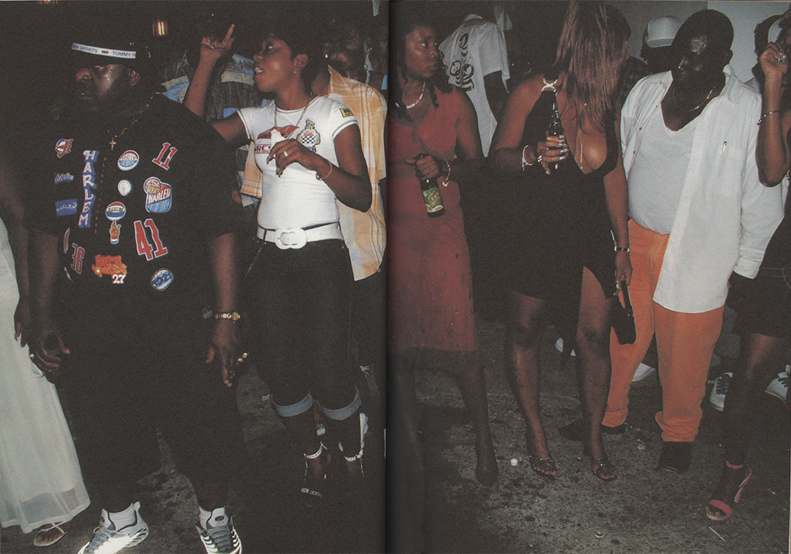

To complement the harsher deejay sound, a "sweet sing" vocal style evolved out of roots reggae and R&B, marked by its falsetto and almost feminine intonation, with proponents like Pinchers, Cocoa Tea, Sanchez, Admiral Tibet, Frankie Paul, Half Pint, Conroy Smith, Courtney Melody, Carl Meeks and Barrington Levy.
